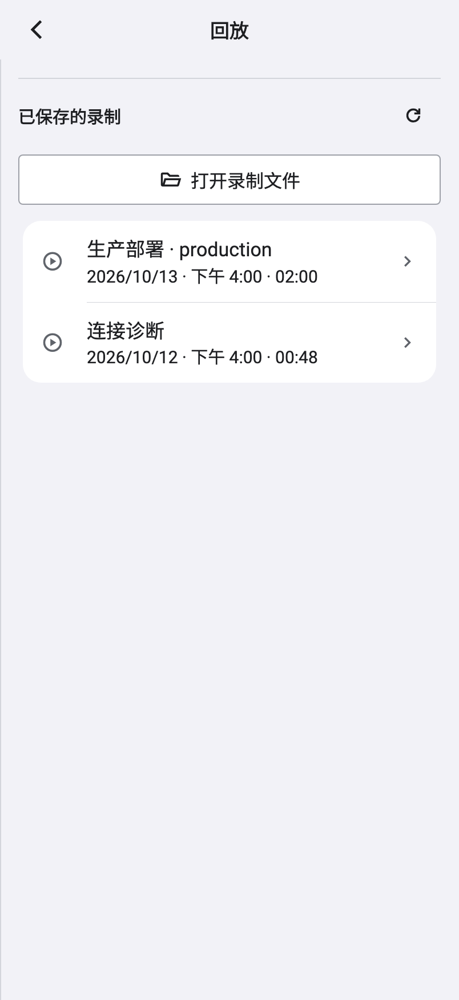
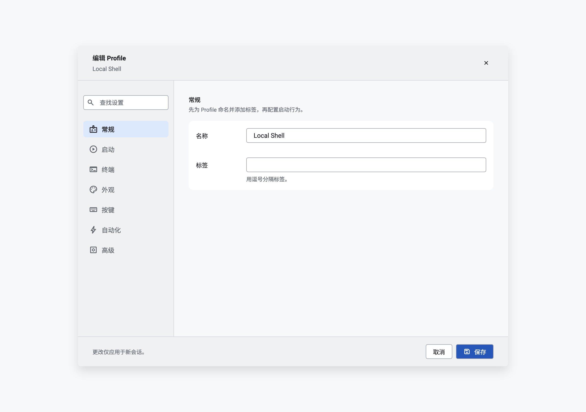
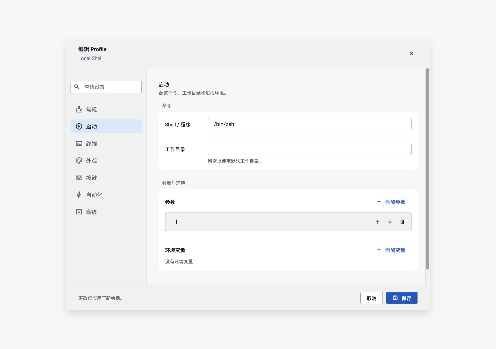
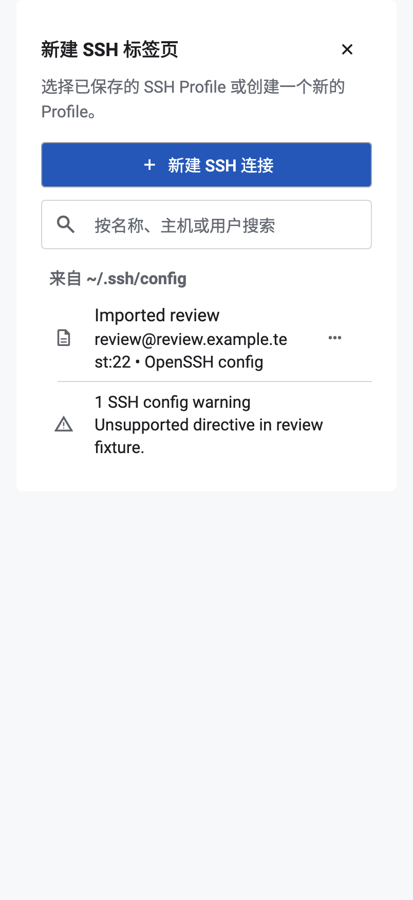

按已确认的 Apple 方向落地。设置、安全策略、AI 连接、Profile、快捷键、指纹核对、回放与导入列表等已更新。终端独立渲染组件未修改。本页面使用实际生产组件渲染，不使用概念图充当实现。
本轮实际截图；没有对应前版留档，不混用旧设计图。




行为回归、静态分析和明暗/横屏截图记录见 验证记录。模拟器与 macOS 原生运行截图。
失败提示持续至主动关闭，成功提示 2 秒消失。账号、关联、取消与保存守卫保留；安全策略选择仍暂存到设置保存。